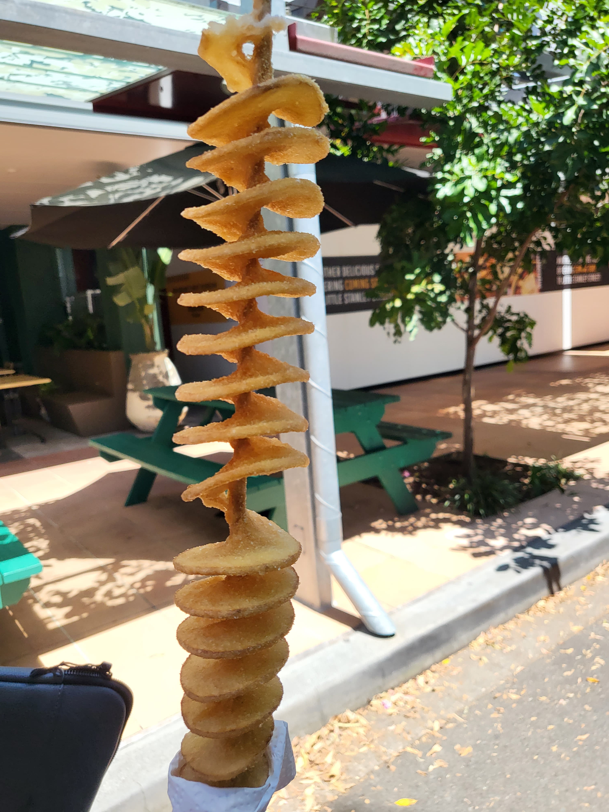
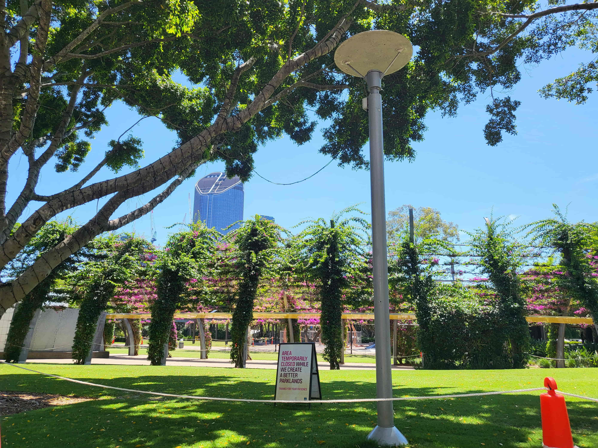

COLLECTIVE MARKETS
Location: Little Stanley St, South Brisbane QLD 4101
Hours:
Saturday: 10am-9pm
Sunday: 9am-4pm
Friday: 5-9pm
There are all sorts of colourful market stall selling lots of toys and games,
collect them all!
And lots of yummy food! Who doesn't love churros?
There's even potato tornados!
All in the beautiful Southbank parklands right next to the brisbane river!
Back